| |
Ravine Flyer II Review
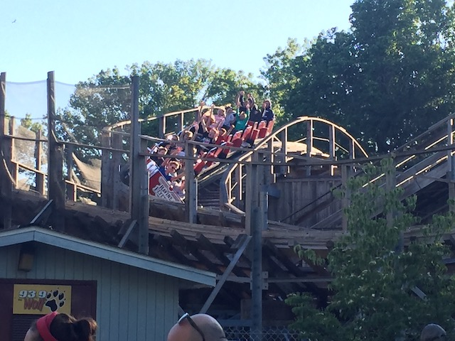
Today, we'll be heading over to Waldameer where we'll be reviewing what is undeniably their star attraction as well as one of the best wooden coasters in America, Ravine Flyer II. This may not get quite as much attention as the other major Gravity Group Woodies in America, such as Voyage. But this is an an amazing ride. Speaking of Voyage, the best way to describe Ravine Flyer II would be Budget Voyage. It's not quite as long, mean, or aggressive as Voyage. But it's still got quite a lot of the same elements and delievers a very similar ride that is still very fast, mean, and aggressive. So yeah. Enough of that. Let's hop in the cars, pull down the lap bars, and we're off. We head down a small curved drop and then begin climbing up the lifthill. It's not super big, but we do get a fantastic view of Waldameer, the setting on Lake Erie, and the rest of the town. We reach the top, wave hello to the Canadian Flag (We may be close to Canada, but we're still in America. Better hope you don't get sick, lest you get f*cked here). We then head down the curved first drop. It's not super big. But you know what? This thing gives us a lot of speed and we fly right down it. Right at the bottom of the drop is a tunnel. We blast through and TAKE THE TUNNEL!!! We pop out of that and fly right over a bridge. You can't really tell on the ride, but we're actually crossing the street right now. LOOK BOTH WAYS BEFORE....F*CK!!! WE ALREADY CROSSED!!! And hey. Nice pop of airtime on the bridge. We then go through a banked turn to the left, and another banked turn to the right. Giving us some really nice lateral Gs. We then head up a curved hill, getting a really nice view of Lake Erie and another pop of airtime. We then drop back down and once again, bunny hop ACROSS THE BRIDGE!!! AND THEN WE TAKE THE TUNNEL!!! BAM!!! We then pop out of the tunnel, get another airtime hill and BAM!!! TAKE THE TUNNEL AGAIN!!! I wasn't kidding when I said this ride is extremely similar to Voyage. We go through another agressive banked turn, giving us some nice laterals before popping up into an airtime hill. Nice pop of ejector air here. Go down a partial downward helix. Go through another little bump. And then....yep. Time to go 90 degrees. We bank, keep leaning, keep leaning, until....90 DEGREES!!!! And yeah. Much like on Voyage, you FEEL IT on this ride. We go bank to normal banking and then pop into another airtime hill. It's a lot more mild and not as strong here, but it's still really fun. Go around a banked turn, and then...BAM!!! SPEED BUMPS!!! Some nice airtime is had through these tiny bumps. We then turn and glide right into the brake run. Wow. So yeah. Budget Voyage is....really the best way to describe this ride. It may not be as mean and agressive as it's older brother. Oh yeah. It's a fantastic ride. You definately have to ride this if you're at Waldameer. It is the star attraction of the park after all. =)
9/10
Location: Waldameer
Opened: 2008
Built by: The Gravity Group
Last Ridden: June 22, 2021
Ravine Flyer II Photos
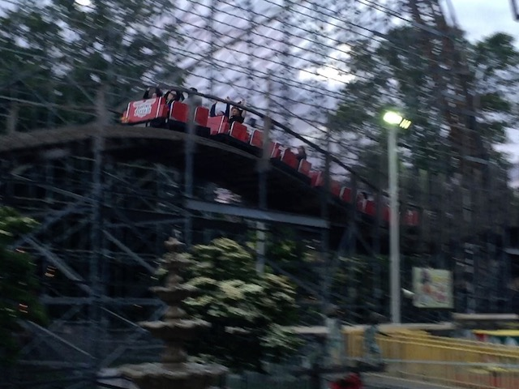
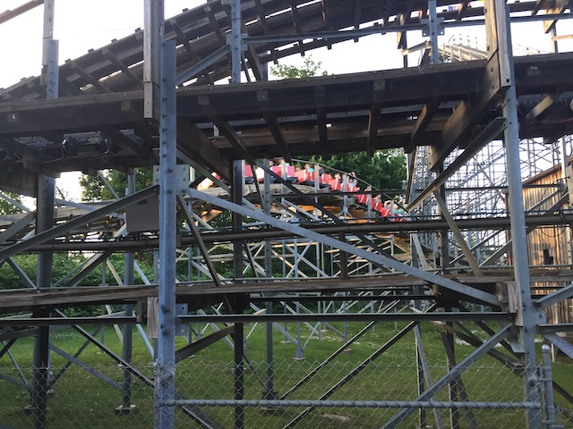
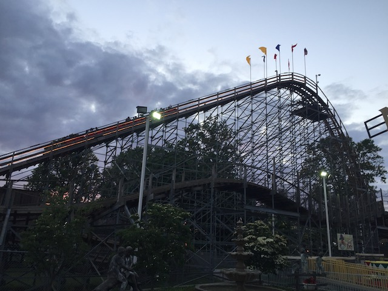
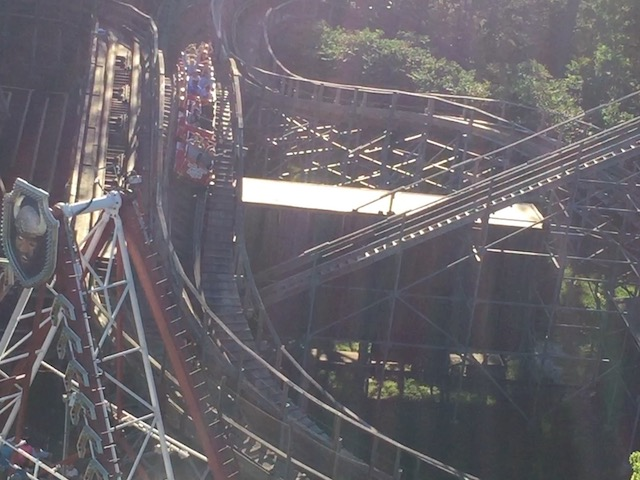
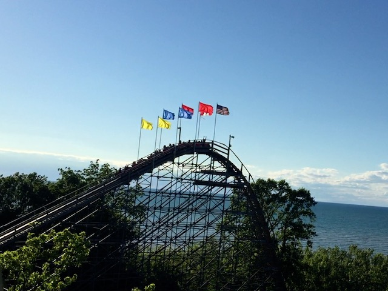
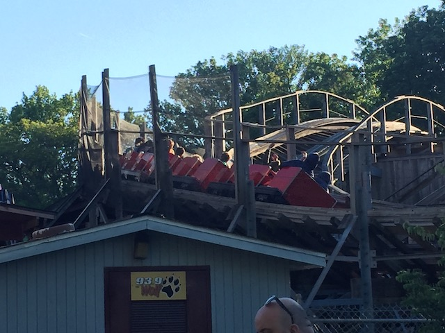
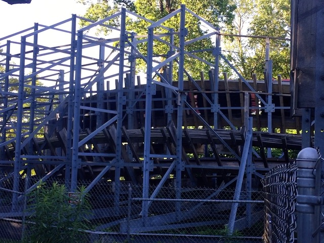
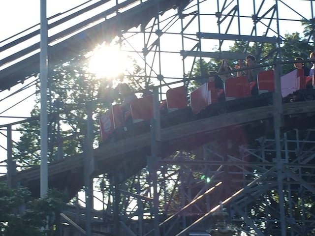
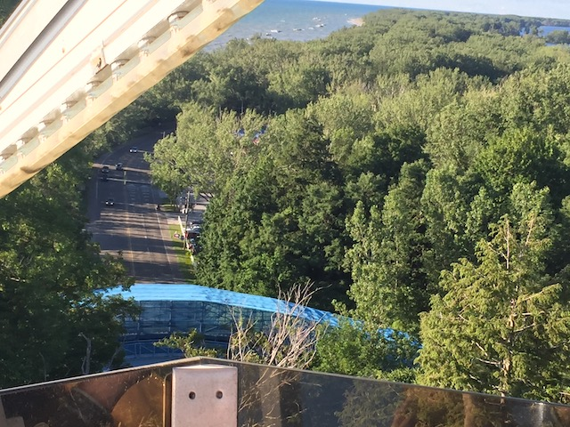
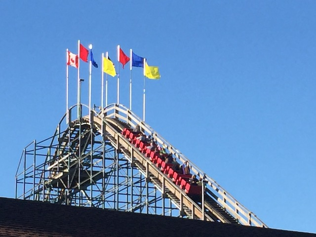
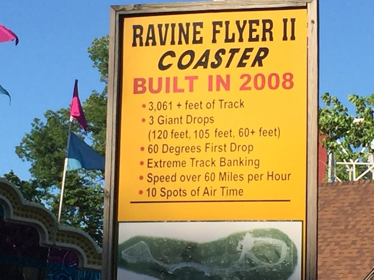
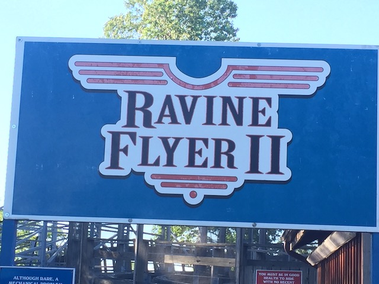
Home
|